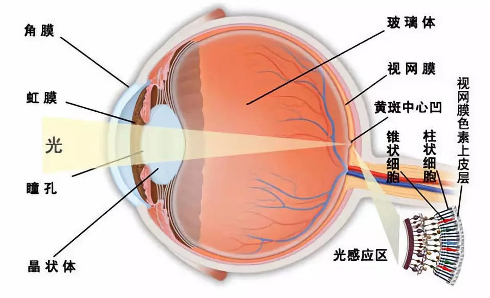

你好，欢迎来到《医学通识50讲》，我是薄世宁。
从这一讲开始，咱们说说病是怎么回事。
你知道人类到今天可以得多少种病吗？
到目前为止，世界卫生组织（WHO）一共收录了26000多条疾病的名称。
也就是说，目前人类已知的疾病有26000多种，肯定还有很多未知的病不在这个疾病清单里。
假如每天用10分钟讲一个病，那也要讲26000天，也就是70年都讲不完。
所以，医学通识课讲的不是某种病的具体发病机制，而是从原理层面帮你建立对疾病的整体认知。理解了原理，也就理解了疾病。
当你站在高处，看山脉看水系就能掌握全局了。
这节课就回答一个问题：我们为什么会生病？
我的答案是：疾病是人类进化的遗产。
人类是大自然进化的产物，从地球上出现第一个真核细胞开始，大约用了上亿年的时间，一路演化，人类才成为今天的样子。
所以，咱们的身体里处处保留着进化的痕迹，而进化却并没有帮咱们消除疾病。
比如，眼睛是这个世界上最精密的光学系统，但是它可以有820多种疾病。
再比如，人这一辈子心脏可以扑通扑通地跳25亿~30亿次，把血液精准地打给每个细胞。
但是心脏自身的血管却非常细，细了就容易窄甚至堵，结果就是心绞痛和心肌梗死。
还有，人类排泄废物是用两个通道：一个尿道，一个肠道。一个液体，一个固体。多一套系统，也就多一层风险。
但是，鸡只有一个通道，看起来效率更高。
进化让鸡和人走上了不同的道路。医院现在要分泌尿科和消化科处理两条道上的问题。
进化为什么要这么做呢？
进化有它自己的逻辑，如何解释，咱们交给科学家去回答。医学把所有这些接受下来，认识到疾病的来源就是进化带来的遗产。
为什么疾病是进化的遗产呢？
接下来，分三个层面讨论。
人体器官性状的不完美
首先，进化的逻辑是让利益和风险平衡，所以导致了人体器官性状的不完美。
比如，咱们刚出生的时候抵抗力差，不会走路，甚至吃奶都容易呛到，容易引起肺炎。
如果母亲多怀上几个月，等胎儿长得更强壮再生产，那小朋友得病不就少了吗？
再比如，为什么母亲要承受难产这么大的风险来生孩子？
还有，为什么阅读障碍症的孩子这么多？有统计，在英语国家这样的孩子甚至可以高达20%~30%。
这些问题的原因归结起来就是，进化只做到了让利益和风险平衡，而不是让利益最大化。
我解释一下。
小马生下来就会走，但是人类用早点生下来换来了更大的利益。
比如，用生下来不会走路，用器官发育不完全换来了脑容量变大。所以人比马聪明，思维能力更强。
但是这样做的代价，就是小朋友刚出生的时候非常脆弱，容易得病，尤其是感染性疾病。
而且，虽然进化用早点生产解决脑袋大这个问题，但是相对于狭窄的产道，还是有一部分的母亲会难产甚至死亡。
所以，进化做不到完美，它只是做到了让这个物种的整体利益和风险平衡。
进化之所以让胎儿的脑袋这么大，是因为综合考虑到了孩子的智力、健康、母亲的安全之后，给出的一个折中方案。
所以，解决这些病靠进化做不到，只能找医生。
再比如，儿童阅读障碍症。
你知道吗？进化根本就没有设计出一个独立的大脑区域用来认字，认字这个能力是借用了大脑图像识别区域。
因为进化必须要考虑到节约能量，以面对环境的风险和不确定性。
多进化出一个大脑的区域，就需要额外的能量维系。所以，这么做同样是为了利益和风险的平衡。
代价就是有些小朋友阅读比别人慢，会出现阅读障碍症，但是他一点都不笨。
以前，咱们可能自豪地认为，人体是大自然精心雕琢的完美艺术品。
其实，咱们身上所有的部件，都是为了让利益和风险平衡，是进化的妥协和折中。
你也想想，人体哪个器官不是为了生存而“精心打造”的利益和风险的共同体呢？
睾丸，为了降温保持精子活力，就这么挂在外面。代价就是容易精索静脉曲张，还容易受到撞击。
视网膜，大家都说它“贴反了”，所以容易剥离，有盲点，一到晚上人就看不清东西了。
那你有没有想过，这种设计可能是为了保护眼睛在强光下免受伤害，增加它的“有效期”，到了晚上让咱们看不到东西抓紧时间睡觉，让身体自我修复。

听到这，你会重新评价人体、进化和疾病的关系吗？
疾病，就是妥协和折中必须付出的代价。这就是进化引起疾病的第一个来源。
人体适应的不完美
其次，人类进化的速度赶不上环境变化的速度，因此导致人体适应的不完美。
可能你会说，这日子这么好，好吃好喝的我很适应。
但是你要知道，好吃好喝是因为人馋，这不是人体真正想要的生活。
人体最适应非洲撒哈拉沙漠南部的半干旱地区。
你是不是立刻想到了非洲沙漠、原始森林、大峡谷、瀑布、清澈的河水，还有咱们穿着树叶拿着棍子追逐动物的老祖宗呢？
大约10000年前左右，人类进入农耕时代，饮食结构彻底变了。
人类像做了个梦，梦里还是饥饿和恐惧，一觉醒来进入了新时代，食物一下子丰富了起来。
但是，咱们的身体、身体里的细胞、细胞里的基因，还停留在饱一顿饿一顿，不停奔跑追逐的记忆里。
身体一下子适应不了新环境，曾经的优势，就有可能会带来今天的病。
比如，在远古时代找点糖不容易，可能就得冒着被蜜蜂蛰得鼻青脸肿的风险，去抢蜂蜜吃。
所以，遇到糖分赶紧存起来这种行为，在当时是能让人活命的，这个基因就被保留了下来。
但是在今天，获取糖分已经很容易了，这种让人不断储存糖分的行为就会引起糖尿病。
再比如，在远古时代能够站起来就跑，跑得快的人容易活。
为啥呢？
很容易理解，远古人要么追动物打猎，要么被动物追逃命，跑不快意味着饿死或者被动物吃掉。
所以，血压快速上升能够让人在紧急状态下，迅速增加重要脏器供血，增加奔跑能力。高血压的基因也被保留了下来。
到了今天，咱们已经不用再为了一顿饭或者逃命去和野兽赛跑了。因此，运动量减少也就带来了高血压。
不用使劲跑就可以获得高脂肪、高热量的食物，看起来是生产力增长带来的福利，但同时也带来了肥胖、高血脂、高尿酸等一系列代谢性疾病。肥胖又增加了人类患癌的风险。
当然，没有人希望再回到非洲，回到撒哈拉。人体需要再进化多少年，才能适应现在的优越环境？这个问题谁也说不好。
人类进化的速度永远赶不上环境的变化，我们没办法躲避疾病，想想就让人发愁。但是，这就是真实的进化故事。
需求与能力匹配的不完美
第三，人类进化出了意识、理性和想象力，导致人类出现新的需求。需求和人体的能力匹配不完美。
人类发明了科学技术、社会文化、文学艺术，因此出现了永生的冲动、探索宇宙的冲动、探索自我的冲动。
咱们想越跑越快、越跳越高。
要登山，还要潜水；要四处旅行，感受异样风情。
经济发展，咱们还要全球贸易。
咱们希望和爱人浪漫地慢慢变老，不想痴呆得相见不相识。
咱们还要探索万物之理，不想到了年龄就退休。
咱们想穿越时间，去人马座比邻星定居（《流浪地球》要去的地方，也是《三体》文明的地方）。
但是，多样性环境带来的风险，行为模式的改变以及长寿，对所有这些新需求，人体的功能无法满足。
这些需求强加在身体的硬件和软件上就是压力，就会带来病。
比如，咱们的基因会突变，进化就给了咱们自我修复的能力，可以自动修复这段发生改变的基因。
但是，高龄、吸烟、饮酒，还有各种损伤因素，都会加速基因的突变。基因突变就会累积下来，当发生在关键位点的时候，就会变成癌基因。
根据国外的研究，超过90岁的高龄老人，死亡后如果做尸检，多数情况体内已经发生了癌症或者癌前病变。
再比如，长年的直立行走和高龄，又带来了关节老化和腰痛的问题。
还有，熬夜、不规律的生活，会对生物钟调控机制产生压力；社会竞争加剧，会对情绪控制和修复能力产生压力。
这些压力逐步累积，就会带来各种各样的病。
思考题
你能不能从进化的角度说说，人类为什么会长白头发？欢迎发在评论区，咱们一起互动。
下节预告
下一讲，咱们说说怎么找病因。纵观医学找病因的方法，就可以让你了解医学的发展简史。